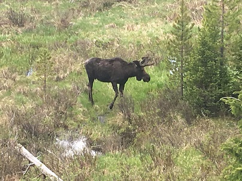
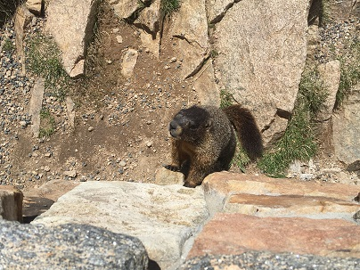
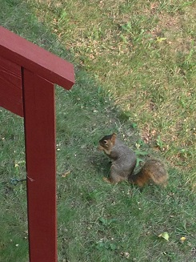
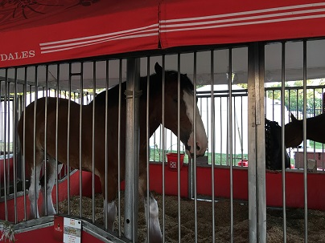
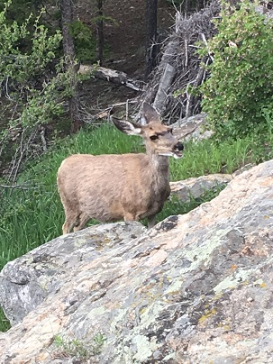
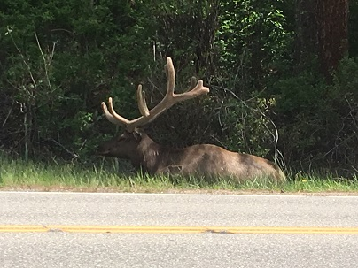

Pets That Found Home
| Moose | Marmot |
|  |  |
| Marty the Moose was found in Estes Park drowning in the Big Thompson River. Our trapper Banjo Sydney was able to rescue Marty and got him relocated to Ranger Smith at the Rocky Mountain National Park Headquarters. | Marty the Marmot was found stuck in a snow bank on top of Emerald Lake. Our trapper Banjo Sydney found Marty and relocated him to Ranger Smith at the Rocky Mountain National Park Headquarters. |
| Squirrel | Horse |
|  |  |
| Stormy the squirrel was being attacked by students at Irving Elementary near Simpson. Our trapper Banjo Sydney was able to fend off Stormy from his attackers and got him relocated to the Simpson Pet Company. | Harry the Horse was found running around Estes Park in the Streets. Our trapper Banjo Sydney was able to control Henry and got him relocated to Ranger Smith at the Rock Mountain National Park Headquarters. |
| Deer | Elk |
|  |  |
| Danny the Deer was found eating groceries in the Fareway in Indianola, Iowa. Our trapper, Banjo Sydney was able to lead Danny out of the store and got him relocated with the Simpson Pet Company. | Elly the Elk was found ramming her head against a tree trunk in the forests of the Rocky Mountain National Park. Our trapper Banjo Sydney was able to stop Elly from hurting herself and got her relocated with Ranger Smith at the Rock Mountain National Park Headquarters. |